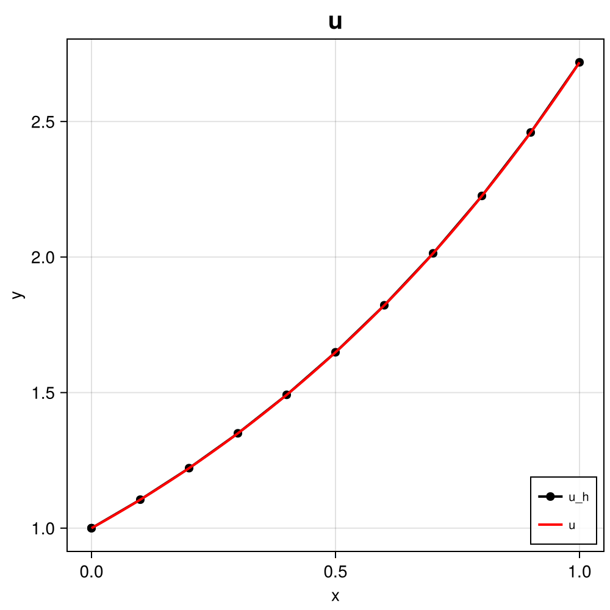

108 : Robin Boundary Condition
This demonstrates the assignment of a mixed Robin boundary condition for a nonlinear 1D convection-diffusion-reaction PDE on the unit interval, i.e.
\[\begin{aligned} -\partial^2 u / \partial x^2 + u \partial u / \partial x + u & = f && \text{in } \Omega\\ u + \partial u / \partial_x & = g && \text{at } \Gamma_1 = \{ 0 \}\\ u & = u_D && \text{at } \Gamma_2 = \{ 1 \} \end{aligned}\]
tested with data $f(x) = e^{2x}$, $g = 2$ and $u_D = e$ such that $u(x) = e^x$ is the exact solution.
The solution looks like this:

module Example108_RobinBoundaryCondition
using ExtendableFEM
using ExtendableGrids
using GridVisualize
# data and exact solution
function f!(result, qpinfo)
result[1] = exp(2 * qpinfo.x[1])
return nothing
end
function u!(result, qpinfo)
result[1] = exp(qpinfo.x[1])
return nothing
end
# kernel for the (nonlinear) reaction-convection-diffusion operator
function nonlinear_kernel!(result, input, qpinfo)
u, ∇u = input[1], input[2]
result[1] = u * ∇u + u # convection + reaction (will be multiplied with v)
result[2] = ∇u # diffusion (will be multiplied with ∇v)
return nothing
end
# kernel for Robin boundary condition
function robin_kernel!(result, input, qpinfo)
result[1] = 2 - input[1] # = g - u (will be multiplied with v)
return nothing
end
# everything is wrapped in a main function
function main(; Plotter = nothing, h = 1.0e-1, h_fine = 1.0e-3, order = 2, kwargs...)
# problem description
PD = ProblemDescription()
u = Unknown("u"; name = "u")
assign_unknown!(PD, u)
assign_operator!(PD, NonlinearOperator(nonlinear_kernel!, [id(u), grad(u)]; kwargs...))
assign_operator!(PD, BilinearOperator(robin_kernel!, [id(u)]; entities = ON_BFACES, regions = [1], kwargs...))
assign_operator!(PD, LinearOperator(f!, [id(u)]; kwargs...))
assign_operator!(PD, InterpolateBoundaryData(u, u!; regions = [2], kwargs...))
# generate coarse and fine mesh
xgrid = simplexgrid(0:h:1)
# choose finite element type and generate FESpace
FEType = H1Pk{1, 1, order}
FES = FESpace{FEType}(xgrid)
# generate a solution vector and solve
sol = solve(PD, FES; kwargs...)
# plot discrete and exact solution (on finer grid)
plt = GridVisualizer(Plotter = Plotter, layout = (1, 1))
scalarplot!(plt[1, 1], id(u), sol; color = :black, label = "u_h", markershape = :circle, markersize = 10, markevery = 1)
xgrid_fine = simplexgrid(0:h_fine:1)
scalarplot!(plt[1, 1], xgrid_fine, view(nodevalues(xgrid_fine, u!), 1, :), clear = false, color = :red, label = "u", legend = :rb, markershape = :none)
return sol, plt
end
endThis page was generated using Literate.jl.